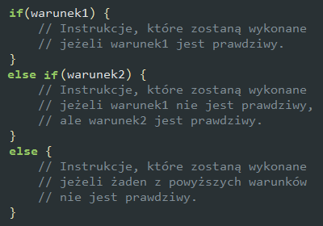

Zagnieżdżona instrukcja if...else
Instrukcję warunkową if...else można zagnieżdżać.
Zadanie 3.
W bloku znajdującym się niżej dołącz skrypt, w którym podasz liczbę, a następnie wyświetlisz napis w zależności od tego, czy podana liczba jest dodatnia, ujemna, czy też równa zero. W napisie musi znajdować się również podana liczba. Użyj zagnieżdżonej instrukcji if...else. Przykład wyprowadzenia wyników (podano liczbę 6):
Liczba 6 jest dodatnia.